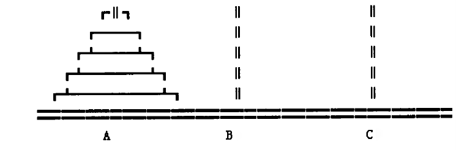
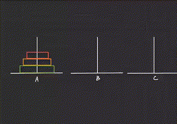

Problem Analysis
For such a problem, it is impossible for anyone to directly write down every step of moving theplate, but we can use the following method to solve it.
Set the number of moving plates as N, in order to move the n plates from rod A to rod C, you can do the following three steps:
(1) With rod C as the intermediary, move plates 1 to N-1 from rod A to rod B;
(2) Move the no. N remaining in rod A to rod C;
(3) With A rod as the intermediary; Move plates 1 to N-1 from rod B to rod C.
This solved the problem, but in practice, only the second step can be done directly, and the first and third steps become the new problem of movement. The essence of the above operation is to transform the problem of moving N plates into moving N-1 plates.How to solve the first and third steps?
In fact, the above method assumes that the number of plates is n, which can be any number, and the method also works for moving n-1 plates. Therefore, according to the above method, the problem of n-1 plates moving from rod A to rod B (the first step) or from rod B to rod C (the third step) can be solved. Now, the problem goes from moving n plates to moving n minus 2 plates.
According to this principle, the original problem can be transformed into a solution for moving N-2, N-3, ...3, 2, until the operation of moving one plate, while the operation of moving one plate can be done directly.
At this point, our mission is truly accomplished. The method of solving complex problems with simple problems and known operations is recursion.
Reference